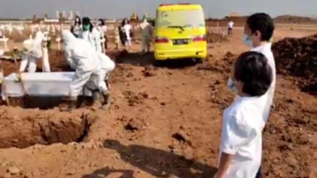

 Suara.com - Kisah pilu mengenai dua anak yang ditinggalkan kedua orang tuanya karena Covid-19 menjadi sorotan warganet. Cerita tersebut dibagikan oleh mantan tokoh mahasiswa, pakar ekonomi dan politikus Indonesia, Rizal Ramli, melalui akun Twitter pribadinya. "Kopas: Jason dan Jeriel, mendadak yatim piatu karena Covid. Ini foto mereka saat mengikuti pemakaman ayahnya, Ivan Siregar - PL ITB 93," tulisnya melalui akun Twitter @Ramlirizal, Jumat (8/10/2021). Kedua anak itu bernama Jason dan Jeriel. Mereka menjadi anak yatim piatu karena ayah dan ibunya meninggal akibat Covid-19. Dalam unggahan tersebut, tampak kedua anak itu menyaksikan pemakaman ayahnya. Rupanya, sang ibu telah meninggal beberapa hari sebelumnya. "Ibu mereka meninggal bbrp hari sebelumnya. Tim Satgas ITB membantu mengurus mereka sampai tadi bisa berangkat ke Medan untuk diasuh keluarga," tambahnya. Melihat unggahan tersebut, warganet memberikan beragam respons. Mereka menguatkan anak-anak tersebut. "Ikut berduka, semoga Jason dan Jeriel kuat,"kata warganet "Innalillahi... Turut berduka...covid merenggut banyak nyawa orang-orang tercinta. Mereka jadi yatim piatu saat masih kecil. Semoga para korban covid 19 mendapatkan tempat terindah disisiNYA. Putra/i yg ditinggalkan diberikan perlindungan. Aamiin YRA,"doa warganet "Jadi ingat keponakan saya Pak, jadi yatim piatu juga...semoga jason dan jeriel bisa jadi anak yang sukses kelak," tulis warganet. Silahkan Berkomentar